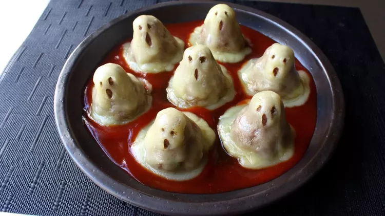

Mini meatloaf ghosts

Description
For a delicious crowd pleaser that will have your family cheering, who ya gonna call? Ghost meatloaf! Turn your
favorite meatloaf recipe into these absolutely adorable, yet still incredibly terrifying, edible apparitions.
They're easy and fun to make and the leftovers make great "ghost on toast" sandwiches.
Ingredients
- 1 pound lean ground beef
- 1 ½ teaspoons kosher salt
- ½ teaspoon freshly ground black pepper
- 1 pinch cayenne pepper
- 2 tablespoons minced green onions
- 1 tablespoon chopped fresh parsley, or to taste
- ⅓ cup plain dry bread crumbs
- 1 large egg, beaten
- 1 teaspoon Worcestershire sauce
- 10 slices provolone cheese
Steps
- Combine ground beef, salt, pepper, cayenne, green onions, parsley, bread crumbs, egg, and Worcestershire
sauce in a large bowl. Mix with a fork until just combined; do not overmix. Wrap and chill in the
refrigerator for 1 hour.
- Preheat the oven to 350 degrees F (175 degrees C). Line a sheet pan with a silicone liner (such as Silpat®).